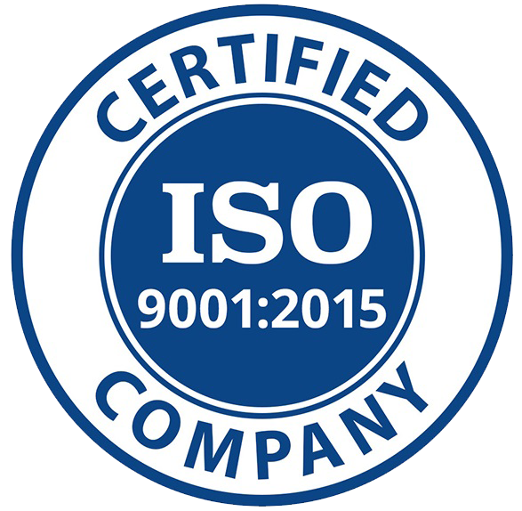

O společnosti
Od počátku našeho podnikání nabízíme našim zákazníkům odborný servis, dodávky a expedici technických těsnění, pojistných kroužků a širokého sortimentu materiálů používaných v automobilovém průmyslu, těžkém průmyslovém strojírenství, zemědělské technice, na železnici, v sanitární technice, chemickém průmyslu a při výrobě plynových armatur, obráběcích strojů a důlních strojů a zařízení.

Politika kvality naší společnosti
- Uplatňování zákonných požadavků v rámci podnikání.
- Zavádění a udržování politiky kvality na všech organizačních úrovních ve společnosti.
- Rozpoznávání současných a budoucích potřeb a očekávání zákazníků prostřednictvím neustálého pozorování a průzkumu trhu.
- Vedení každého zaměstnance k odpovědnosti za kvalitu práce na jeho pozici.
- Získávání a upevňování spokojenosti zákazníků projevující se v budoucích opakovaných nákupech.
- Nabízení vysoce kvalitních výrobků za atraktivní ceny.
- Nabízet výrobky vyrobené prověřenými a kvalifikovanými dodavateli.
- Uplatňovat prvky systému řízení kvality v souladu s požadavky normy PN-EN ISO 9001.
- Zlepšování systému řízení kvality.

Kontaktujte nás
44-335 Jastrzębie Zdrój
ul. Pszczyńska 305
Otevřeno od pondělí do pátku od 7:00 do 16:00.